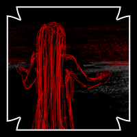

MAIN CAST
| Anti
@umbradoodles A Shadow, who journeyed to Symphony to keep a promise. Over the course of his quest, through encountering other contestants and seeing how the Queen runs her kingdom, his goals have set in a new direction. He aims to confront Eliza, alongside his companions, to adress their concerns. |
|
| Fwuki
@sketchy_jessie A human shapeshifter, brought to Symphony by dreams of freedom. He's now working with Anti to confront the Queen. |
 |
| Mesphite @R33dArt A woman of the cloth. Due to the events of the previous round she has become possessed by the eye of the Goddess she worships. Having escaped execution, she now walks an uncertain path. |
|
| Caroline @inallcapsart The adopted daughter of Mesphite and the Heir Apparent for Isla's Cult. She is currently wrestling with the revelation of her past. Will she forgive Mesphite? Or forsake her? |
|
| Celia @TriggyKyun The spirit within a dryad's flower that Anti has safeguarded to keep his promise. Having recently awoken, she looks forward to the day Anti fufills that promise, and takes her home to her father. Until then, she offers what she can to her current guardian. |
|
| Isla(?) She has long awaited this day. |
 |